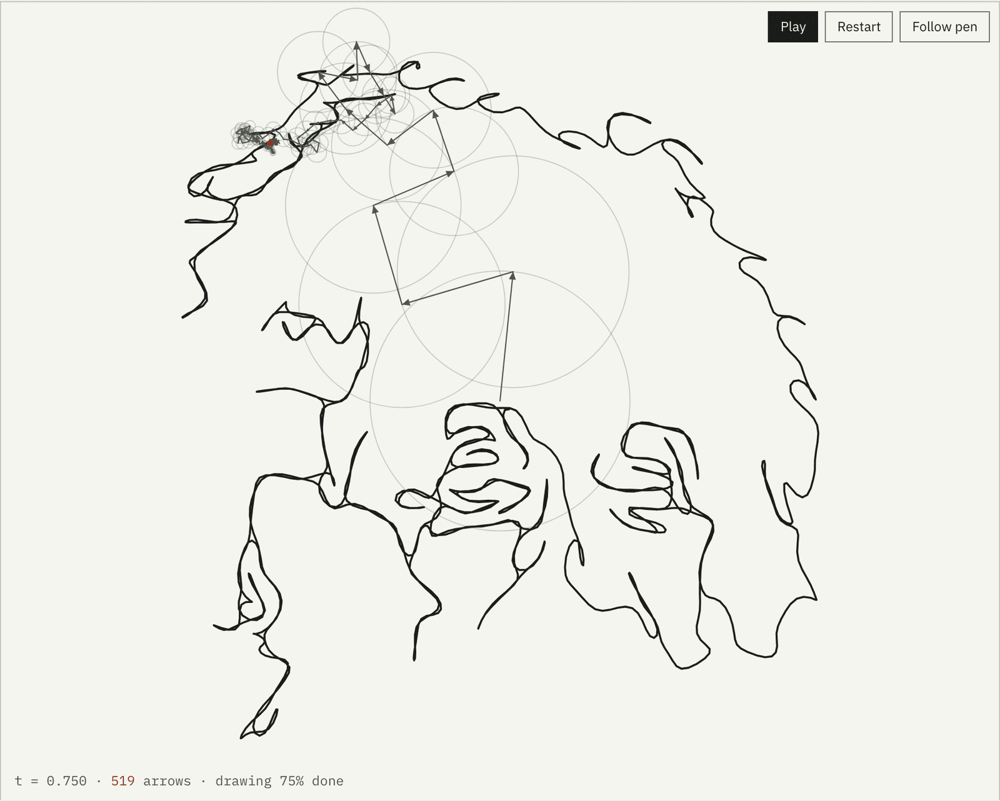
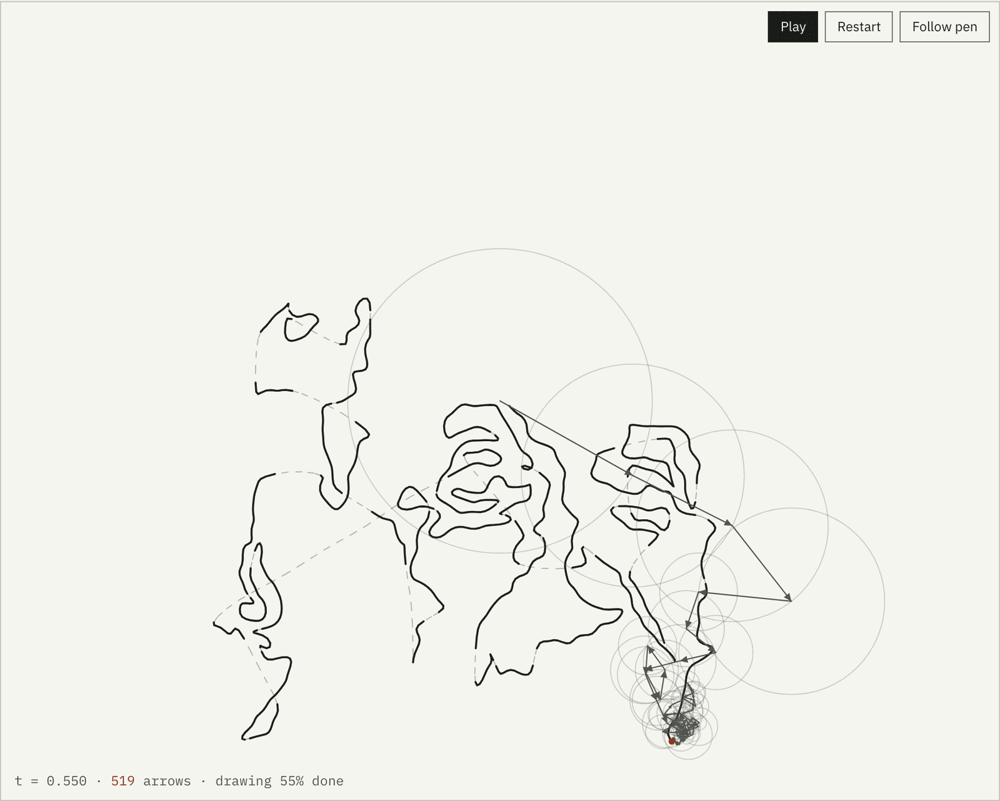
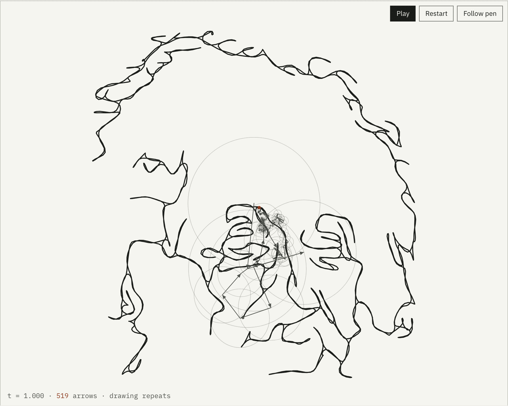
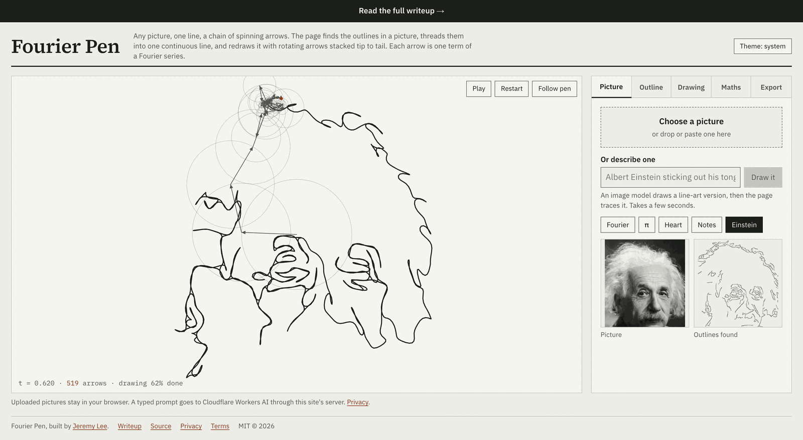
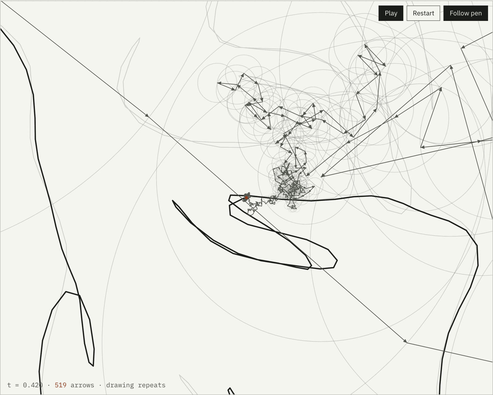
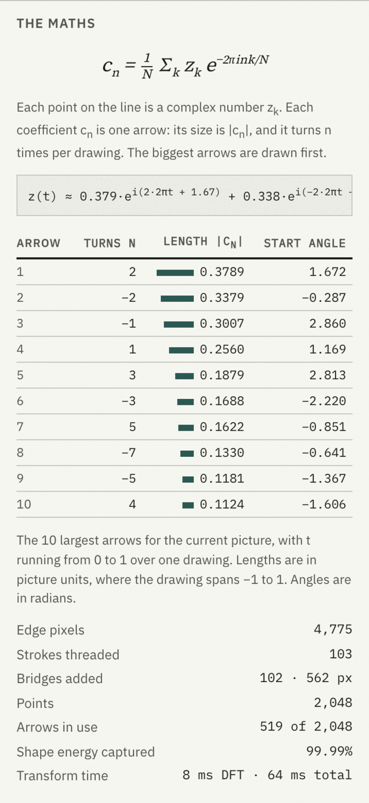
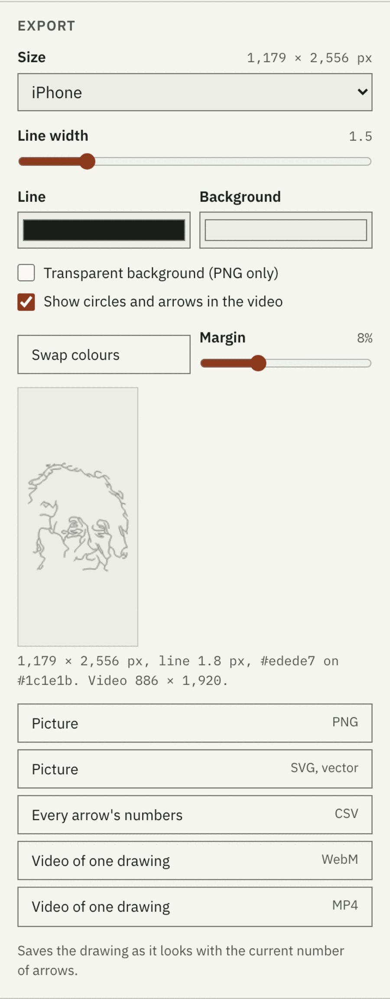
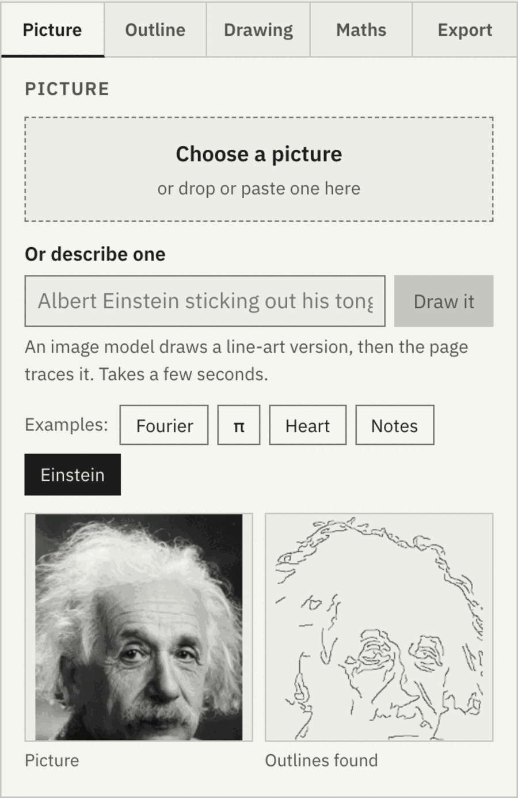
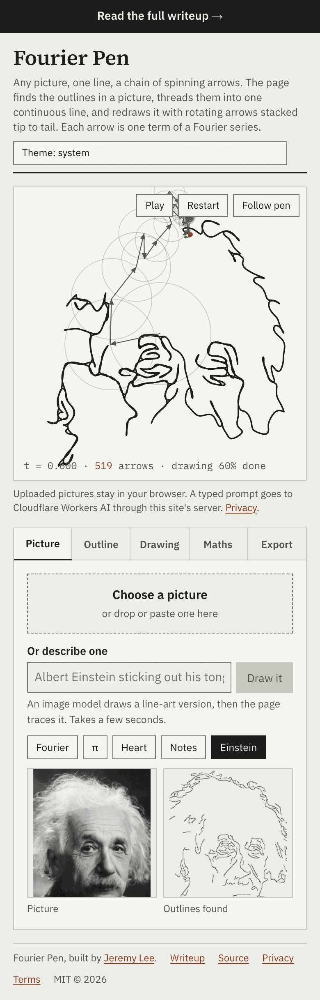

Edge detection, a spanning tree and a DFT
Give it a picture. It finds the outlines, joins them into one continuous line, and takes the discrete Fourier transform of that line. Each coefficient becomes an arrow that turns at its own speed; stacked tip to tail, the arrows trace the picture back out. The math is on the page with every number filled in, the drawing saves as a wallpaper, a vector, a CSV or a video, and the picture never leaves your browser.

The pen never lifts. Strokes are joined by the shortest possible bridges and the pen backtracks over its own ink instead of jumping.
for the full discrete Fourier transform at 2,048 points, computed directly in O(N squared) time without an FFT. The page reports its own timing.
of your picture uploaded. Edge detection, path building, the transform and every export run in the browser. Only a typed prompt goes to a server.
Largest export. Wallpaper presets run from iPhone to 5K, in your own colors, plus SVG, CSV and WebM or MP4 video.
The idea
Put the picture on the complex plane: every point on the line is a number z = x + iy. Walk the line at constant speed over one unit of time and you have a periodic function z(t). Any periodic function is a sum of rotating terms, cn e2πint, one for each integer frequency n. The coefficient cn is a complex number too: its size is the length of an arrow, its argument is the angle the arrow starts at, and n is how many full turns it makes per drawing. Add the arrows tip to tail and the last tip traces z(t).
With N sample points the series has exactly N terms, from frequency −N/2 to N/2 − 1, and the discrete transform gives them directly: cn = (1/N) Σk zk e−2πink/N. Sort the arrows by length and use the first K. A handful give a blurry, rounded ghost of the picture. All N reproduce it exactly, because the transform is invertible. That is the whole trick. The panel below runs it on this page.
Largest arrows in use
| n | |cn| | angle |
|---|
Edge detection, path building and the transform run in your browser on 2,048 points with the app's default settings, so the energy figures match the captions further down. Drag the slider to 10 for the blurred silhouette and to the end for the exact line.
| Arrow | Turns n | Length |cn| | Start angle |
|---|---|---|---|
| 1 | 2 | 0.3789 | 1.672 |
| 2 | −2 | 0.3379 | −0.287 |
| 3 | −1 | 0.3007 | 2.860 |
| 4 | 1 | 0.2560 | 1.169 |
| 5 | 3 | 0.1879 | 2.813 |
Read from the Maths tab in the screenshot further down, captured 2026-10-14. Lengths are in picture units (the picture spans −1 to 1); angles in radians.
Path building
The Fourier step is ten lines of code. Most of the work comes before it, because a photograph starts out as pixels. The page scales the picture to 360 px, stretches its contrast, and runs a Canny edge detector written by hand (Gaussian blur, Sobel gradients, non-maximum suppression, hysteresis). That gives edge pixels. Walking them greedily gives strokes: for the Einstein example, 103 separate strokes after dropping anything under 14 px.
A Fourier series needs one closed loop, so the strokes have to become one path. The obvious way is to hop: finish a stroke, jump straight to the nearest unfinished one. The jumps become ink the series has to draw. For this portrait they add up to 2,206 px of straight lines across the face.
Fourier Pen does something a plotter would do instead. It finds the shortest set of bridges that connects every stroke (Kruskal's minimum spanning tree over a spatial grid, widening the search radius until everything is connected), then walks the tree as an Euler tour: into each stroke, to its end, back to its start, back to where it came in, crossing each bridge once in each direction. Every stroke is drawn twice over the same ink, and the only new marks are the bridges: 102 of them, 562 px in total, a quarter of the hop version's connectors. The pen never lifts, and the drawing closes on itself, which is what makes it periodic.


The iterative Euler tour that shipped is tested against the recursive version from the prototype, point for point, on 300 random strokes. The output matches, and the new version has no recursion limit.
tests/path.test.jsLayout
The drawing takes the left of the screen and every control lives in a tabbed panel on the right: Picture, Outline, Drawing, Maths, Export. Both are sized to the viewport, so on a Full HD monitor or a MacBook the page never scrolls and the drawing stays in view while anything is adjusted. Light and dark themes follow the system, with a toggle in the header.

Watching it
The large arrows set the overall position and barely move. The detail is in the small ones at the end of the chain, which spin fast and sit inside circles a few pixels wide. "Follow pen" zooms six times in on the tip and tracks it, which is the view from the video that started all of this.

Beside the drawing the page shows the numbers it is using: the live equation with the three largest terms, the eight largest arrows as a table (frequency, length, starting angle), and how much of the shape's energy, Σ|cn|², the current arrow count captures. Every one of those numbers is also in the CSV export, all N rows.

Export
Exports draw the curve for the number of arrows on screen, so what you save is what you see: a 40-arrow face is a valid wallpaper. Size presets cover iPhone, iPhone Pro Max, three MacBooks, Full HD, 4K and 5K, with custom sizes up to 8,192 px, your own line and background colors, a transparent PNG option, and a live preview. SVG uses the same options. Video records one full drawing with the arrows and circles, in real time through the browser's own MediaRecorder, as WebM everywhere and MP4 where the browser can encode it.

Text prompts
The second input is a text box. The prompt goes to a small serverless function, which wraps it in a fixed instruction ("a clean single-line drawing of …, black ink on white, continuous outlines only") and asks an image model for a picture: FLUX.1 schnell on Cloudflare Workers AI, whose free plan allows 10,000 "neurons" a day, enough for hundreds of images; past that, requests fail and nothing is billed. The returned image drops into the same pipeline as an upload. The function holds the API key, checks the request came from this site, limits each address to ten prompts in ten minutes, and keeps nothing.
That is also the one place the privacy claim has a caveat, so the page says it under the drawing: uploaded pictures never leave your browser; a typed prompt is sent to Cloudflare. The privacy page spells out what the function sees.

On a phone
The stage goes square and the tabbed panel sits beneath it, so the drawing stays one flick away from any control. Paste works from the clipboard, and the drop zone is a file picker on touch screens.

Limitations
Canny finds contrast and knows nothing about what it is looking at. Hair, fabric texture and a busy background all produce edges, and a face with soft lighting produces few. The Einstein example works because it is a studio portrait with a plain background, and even then it opens with smoothing raised to 2.0 px and strokes under 14 px dropped. Snapshots with cluttered backgrounds come out as scribble. A learned line-art model would do better, and this version doesn't have one.
Greedy stroke tracing leaves orphan fragments at junctions; the length cut-off hides most of them. In continuous mode every stroke is drawn twice, so it needs about double the sample points for the same detail, which is why the default is 2,048 points (the slider also offers 512, 1,024 and 4,096). Video export runs in real time because MediaRecorder cannot run faster than the screen, so an 18-second drawing takes 18 seconds to save, and it is capped at 1,920 px on the long side.
The text prompt depends on a third-party model and a daily allowance. If the allowance runs out the button says so and everything else keeps working.
Build
drawScene function on a 2d canvas, shared by the stage and the video recorder.